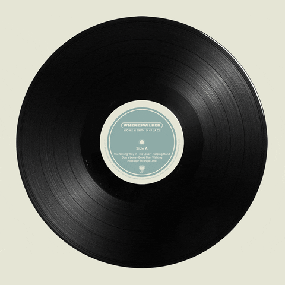

Now in my earphones it's playing Collide by Anson Seabra
I usually listen to R&B, pop, and softer emotional songs, but my playlist changes a lot depending on my mood. I especially like songs that feel personal and have lyrics or melodies that make me want to come back to them again and again.
Music is a big part of my everyday life. I listen to music almost everywhere, when I’m walking around the city, taking the subway, or working on something. I can't live without music.